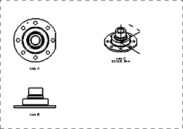
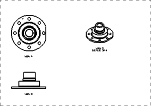
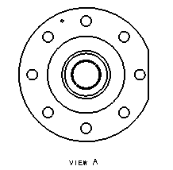

Turn off all of the borders around the views in the drawing.

You decide that the datum geometry will not be displayed in the isometric view.
Use the Layer Visible in View dialog box to adjust the Isometric view on the drawing sheet so that objects on layer 61 are not visible.

You decide that the TOP view of the part will not show blends.
Turn off the display of smooth edges on the TOP view.
